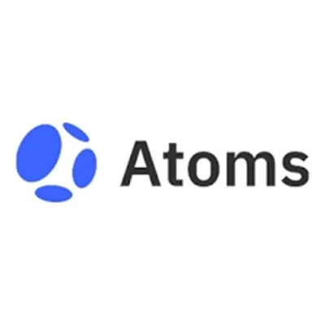
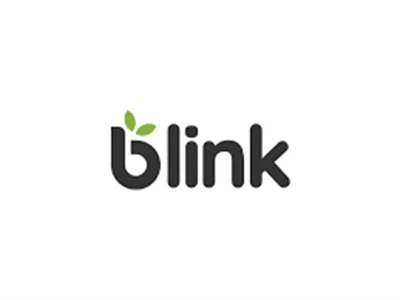
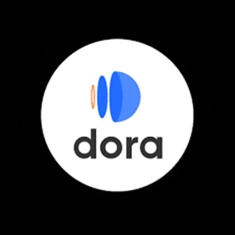
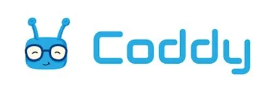
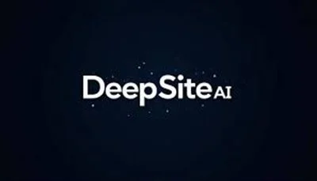

Best AI Coding & Developer Tools 2026 – Build Faster with AI
AI coding tools are transforming software development in 2026. Whether you are an experienced developer looking to speed up your workflow, or a complete beginner who wants to build an app without writing a single line of code — these are the best AI coding and development tools available today. From AI code assistants to full no-code app builders, all reviewed and curated by WebAlati.
Some links on this page are affiliate links. We may earn a commission at no extra cost to you. Disclosure policy →

Atoms
FreemiumAI development companion that integrates into your IDE and provides code generation, debugging assistance, and intelligent refactoring suggestions. Speed up development and improve code quality.
Try Atoms →
Blink
FreemiumNo-code platform that turns plain text descriptions into fully functional web apps. Just describe what you want and Blink builds it, automated app generation and deployment without any code.
Try Blink →
Dora
FreemiumModern no-code website builder focused on animations and visually rich designs. Create professional, animated websites without coding skills. Ideal for designers and freelancers.
Try Dora →
Coddy
FreemiumInteractive coding education platform that teaches programming through AI-guided challenges and real-time feedback. Adapts learning paths based on your progress across multiple languages.
Try Coddy →
DeepSite
FreemiumAI website builder that creates complete websites from text descriptions. No coding required — describe your website idea and DeepSite generates and deploys it in minutes.
Try DeepSite →Frequently Asked Questions – AI Coding Tools
What is the best AI code assistant in 2026?
Atoms is a top-rated AI code assistant that integrates into your development environment and provides intelligent code generation, debugging, and refactoring support. It's designed to speed up professional software development.
Can I build an app without coding using AI?
Yes — Blink and DeepSite are no-code AI tools that let you build fully functional apps and websites just by describing what you need. Blink specializes in web applications while DeepSite focuses on website creation.
What is the best tool to learn coding with AI?
Coddy is the best AI-powered platform for learning to code. It teaches multiple programming languages through interactive challenges with real-time AI feedback, adapting the learning path to your level.
What is the difference between AI code assistants and no-code AI builders?
AI code assistants (like Atoms) work inside your development environment and help professional developers write, debug, and refactor code faster. No-code AI builders (like Blink and DeepSite) let non-developers create apps and websites by describing what they need in plain English. Code assistants require coding knowledge; no-code builders do not.
Can AI build a full website or app automatically?
Yes — DeepSite and Blink can generate complete, functional websites and web apps from a text description. DeepSite specializes in static websites with clean HTML/CSS output. Blink handles more complex web applications with data interactions. For production-quality apps, AI-generated code typically requires developer review and refinement.
Some links on this page are affiliate links. We may earn a commission at no extra cost to you. Disclosure policy →